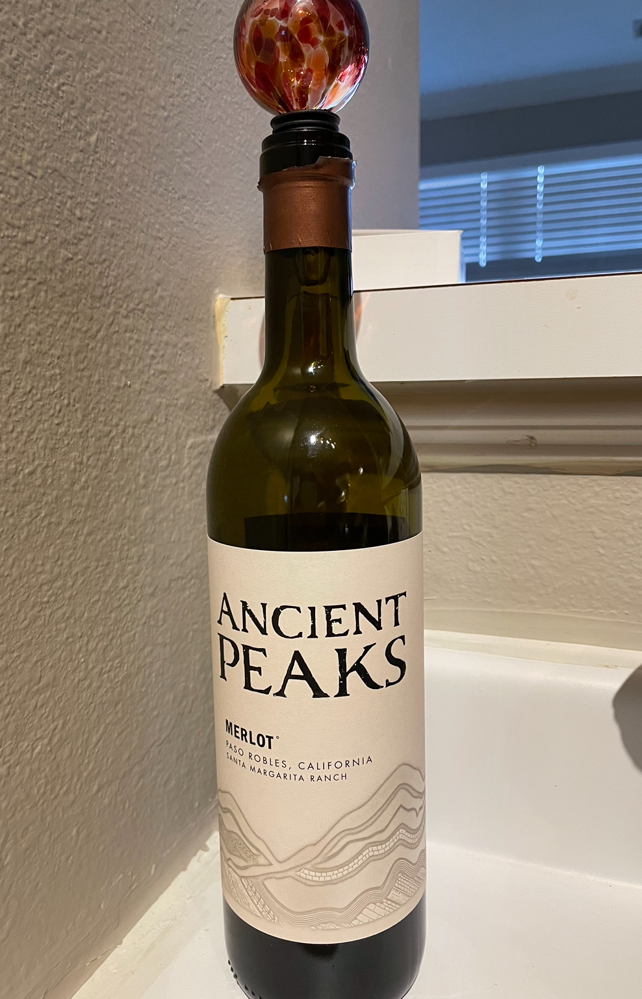

Merlot
What is it?
Merlot is a red grape, and it is the second most planted red grape in the world! Merlot is known for hiding well in blends and disguising itself as other wines - it's sometimes called a "chameleon" for this reason. The name "Merlot" translates to "little blackbird" in an old regional French dialect [2]. Merlot is also a genetic "half-sibling" of Cabernet Sauvignon (they share Cabernet Franc as a parent).
Primary flavors include cherry, chocolate, plum, bay leaf, and vanilla. Merlot pairs well with many things, including pizza and pasta for easy-drinking Merlot, and rich meats like lamb or filet mignon for rich and full Merlot. We had this wine with a vegetarian pizza.
Molly's Rating and Tasting Notes
8.0. This was so much better than I had anticipated. It really grew on me as I kept drinking it. The main tasting note I get is cranberry - it's very present on the nose for me. The taste is almost like a dried cranberry with zero sweetness. On the first taste, I was pretty sure I wasn't going to like it because it was shockingly dry (to me). But by the end of my glass, I was pretty happy with it. It also went well with the pizza we had.
Ryan's Rating and Tasting Notes
7.8 On the nose I get chocolate, cranberry, cherry, pomegranate, bourbon barrel, and dried leaf covered in dirt. Upon tasting it is mostly dry, with a decent amount of flavor up front. It starts off pretty juicy, but quickly evaporates into something a little more vapid. It has a lot of fruitiness in the beginning, most notably the fruit flavors mentioned above. I will say though that there is definitely an emphasis on the cherry, and there might be an added dash of plum and pepper as well. There's also a strong dark chocolate note permeating through the entire experience which is quite pleasant. The ending is a little abrupt, and leaves with a slight hint of cacao and indescript tree parts. The wine is quite light, doesn't really coat the mouth, and isn't that full-bodied, all of which are to the wine's detriment in my opinion. The flavors are good, but there's something lacking that would take it to the next level. This wine has been weighed. It has been measured. And it has been found wanting. Overall, good but not great.
References
[1] Madeline Puckette and Justin Hammack. Wine Folly: The Master Guide. Avery - A Penguin Imprint, New York, NY, 2018.
[2] "Merlot. https://winefolly.com/grapes/merlot/Accessed: November 2023.
Wines we haven't finished
- Week 42 - Tawny Port